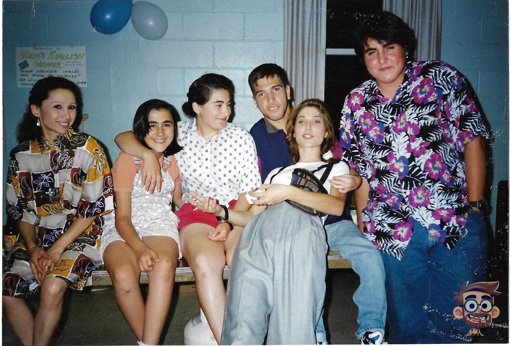

More Than Words
My own declaration of independence didn’t come on a Fourth of July. It came on an ordinary November afternoon.

Now that school is finally over and summer has officially started, my family and I took our yearly trip—almost a tradition by now—of spending the first day of summer at the beach, usually somewhere in North Carolina.
With all the extra time together lately, I’ve found myself telling old stories—and while my oldest knows these memories well, my 19-year-old seems to have missed a lot of them. The other day she surprised me: “Wow, what’s with all the lore you’ve been dropping lately?” It still makes me laugh to hear her put it that way.
So as we drove to the beach, I started reliving some of them. And one that surfaced was the day I realized I could actually understand English. For the first 17 years of my life, English wasn’t part of my world at all—and when I moved to the U.S. I didn’t know a single word of it.
I arrived in the U.S. on May 28th, 1991, carrying a single piece of luggage, a box of stamps I’d been collecting since I was eight, and one or two books I treasured. I remember meeting my parents at JFK and the flood of relief at being together again, knowing they were okay.
I wasn’t just singing in English. I understood every single word.
I suppose it was only a matter of time before something clicked, and for me, the moment came while I sat in my room doing geometry homework with the radio on—Z100, like always. A song that had been playing several times a day on MTV came on, and I started humming along while my mind churned through my homework.
The song, fittingly enough, was “More Than Words.” And to this day, every time I hear it, it carries me back to that teenager in the fall of his junior year, bent over his geometry homework, realizing he’d finally learned just enough English to be dangerous.